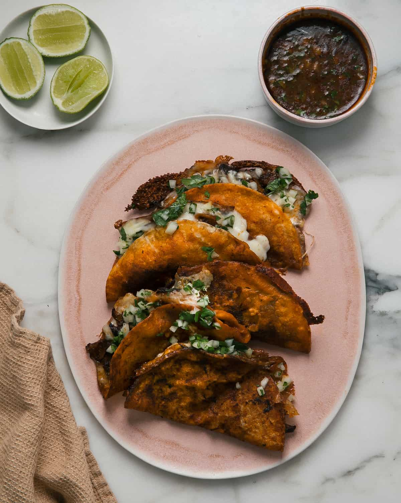

Recipe for Birria Tacos

Birria is a meat stew bathed in a melange of chiles and spices, giving it
a deep red hue. Birria tacos feature tortillas filled with the stew's
tender, juicy meat. They are served with the consomme, on the side topped,
topped with onion and cilantro. They are addictively cripsy.
Ingredients
- Dried chilles and Peppers: Guajilo, ancho and chiles de arbol
- Mexican oregano
- Mexican Cinnamon
- White onion
- Garlic
- Tomatoes
Steps
Part One
-
Bring your meat to room temperature and then salt it like the ocean.
-
In a large pot that has a oven-proof lid, place over medium heat and
begin to sear the meat on all sides. Continue for all pieces of meat.
-
After the meat is seared, add the chiles, tomatoes, onions, spices and
garlic to a put with enough water to simmer. Continue to simmer for
about 20 minutes or until the tomatoes and chiles are softened.
-
Save about 3 cups of the stock and then drain it. Transfer all the
chiles, tomatoes, and others into a blender along with a cup or two of
stock or water and blend till smooth.
-
Add the meat back into the large put and pour the blended mixture with
it. Bring it to a gentle simmer and cover. Continue for about 3 to 3 1/2
hours until the mear shreds easily.
Part Two
- Remove the meat from the sauce and shred it with forks.
-
Add some of the consome to a bowl and add a little beef broth if needed.
-
Mince up some onion and cilantro and mix it into a small bowl with a few
squeezes of lime and a pinch of salt.
-
Aff a spoonful of the cilantro and onion micutre to the consome and a
squeeze of lime.
-
Dip a corn torilla into the top of the sauce, then put it on a non-stick
skillet over medium-high heat.
-
Flip over and then add a small handful of shredded meat and a handful of
Oaxacan chesse. Shape it into a taco and flip over so it can get cripsy
and melty.
-
Transfer to a plate and continue working along with the rest of the
Birria tacos!